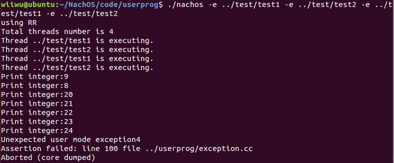
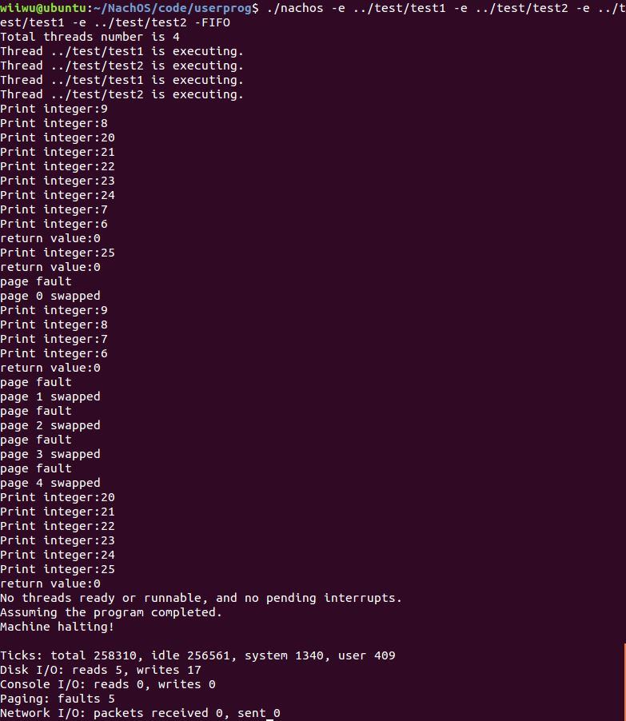
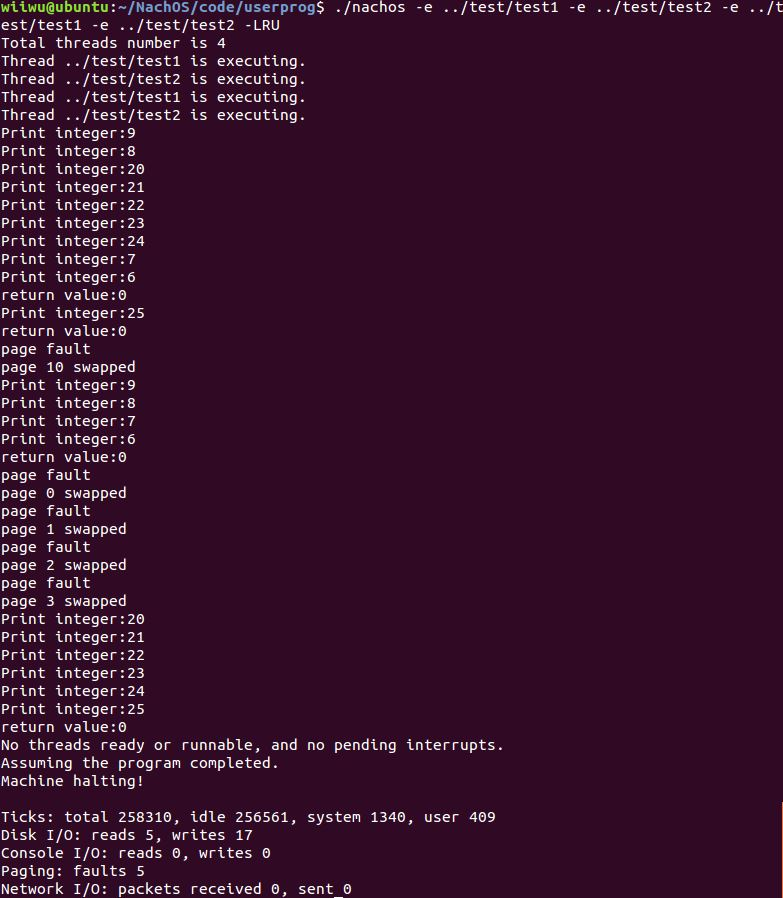

好難…嗚嗚嗚QQ
作業要求
- 實現 virtual memory 並可以處理 page fault
- 實作 Page Replacement Algorithm 的 FIFO 與 LRU
- First in First out Page Replacement(FIFO)
- Least Recently Used Page Replacement(LRU)
Virtual Memory
為了實作 virtual memory 的部分，把前面原本 multiprogramming 的地方修改了
先在 /code/userprog/userkernel.h 中加上輔助用的記憶體
1
2
3
4
| class UserProgKernel : public ThreadedKernel {
public:
SynchDisk *virtualMemoryDisk;
|
還有 /code/userprog/userkernel.cc
1
2
3
4
5
6
7
8
9
10
11
12
13
| void
UserProgKernel::Initialize()
{
ThreadedKernel::Initialize();
machine = new Machine(debugUserProg);
fileSystem = new FileSystem();
virtualMemoryDisk = new SynchDisk("Virtual Memory");
#ifdef FILESYS
synchDisk = new SynchDisk("New SynchDisk");
#endif
}
|
在 /code/machine/machine.h 中加上會使用到的變數
1
2
3
4
5
6
7
8
9
10
| class Machine {
public:
bool usedPhyPage[NumPhysPages];
bool usedvirPage[NumPhysPages];
int ID_num;
int PhyPageName[NumPhysPages];
int count[NumPhysPages];
TranslationEntry *main_tab[NumPhysPages];
static int fifo;
|
宣告必要參數
/code/userprog/addrspace.h
1
2
3
4
5
6
| class AddrSpace {
public:
int ID;
private:
bool pageTableLoaded;
}
|
許多調整都在此處，這裡負責 load 程式碼到 memory 裡面，所以相當重要。
我在這裡開一個專屬這個 thread 的 page table，在 load 時一直往下找記憶體直到找到沒被用到的或是到底為止，以此來判斷 memory 夠不夠用，若不夠就需要用到輔助記憶體，需要存好一些重要參數以便要用的時候找得到。
/code/userprog/addrspace.cc
後來覺得這段很醜所以就不放過來了，留在github裡面了。
Page Replacement
宣告參數
/code/machine/tranlate.h
1
2
3
4
5
| class TranslationEntry {
public:
int count;
int ID;
};
|
主要都是改 else if (!pageTable[vpn].valid) 裡面的東西，FIFO 就是一直照順序當 victim，
LRU 則是用一個 count 來計被用到的次數，每次把次數最少的換掉。
找完 victim 之後再去做 swap in swap out 的動作。
/code/machine/tranlate.cc
1
2
3
4
5
6
7
8
9
10
11
12
13
14
15
16
17
18
19
20
21
22
23
24
25
26
27
28
29
30
31
32
33
34
35
36
37
38
39
40
41
42
43
44
45
46
47
48
49
50
51
52
53
54
55
56
57
58
59
60
61
62
63
64
| else if (!pageTable[vpn].valid) {
printf("page fault\n");
kernel->stats->numPageFaults++;
j = 0;
while(kernel->machine->usedPhyPage[j] != false && j < NumPhysPages){ j++; }
if (j < NumPhysPages) {
char *buffer;
buffer = new char[PageSize];
kernel->machine->usedPhyPage[j] = true;
kernel->machine->PhyPageName[j] = pageTable[vpn].ID;
kernel->machine->main_tab[j] = &pageTable[vpn];
pageTable[vpn].physicalPage = j;
pageTable[vpn].valid = true;
pageTable[vpn].count++;
kernel->virtualMemoryDisk->ReadSector(pageTable[vpn].virtualPage, buffer);
bcopy(buffer, &mainMemory[j * PageSize], PageSize);
}
else {
char *buffer1;
buffer1 = new char[PageSize];
char *buffer2;
buffer2 = new char[PageSize];
if (kernel->vmtype == 0){
victim = fifo % 32;
}
if (kernel->vmtype == 1) {
int min = pageTable[0].count;
victim = 0;
for(int i = 0; i < 32; i++){
if(min > pageTable[i].count){
min = pageTable[i].count;
victim = i;
}
}
pageTable[victim].count++;
}
printf("page %d swapped\n",victim);
bcopy(&mainMemory[victim * PageSize], buffer1, PageSize);
kernel->virtualMemoryDisk->ReadSector(pageTable[vpn].virtualPage, buffer2);
bcopy(buffer2, &mainMemory[victim*PageSize], PageSize);
kernel->virtualMemoryDisk->WriteSector(pageTable[vpn].virtualPage, buffer1);
main_tab[victim]->virtualPag e= pageTable[vpn].virtualPage;
main_tab[victim]->valid = false;
pageTable[vpn].valid = true;
pageTable[vpn].physicalPage = victim;
kernel->machine->PhyPageName[victim] = pageTable[vpn].ID;
main_tab[victim] = &pageTable[vpn];
fifo ++;
}
}
|
操作
有特別在 /code/userprog/userkernel.cc 加上一些參數調整讓他可以用參數切換，所以只要使用 -LRU 或 -FIFO 就可以選擇要使用的方法了。
Default 是設定使用 FIFO。
結果
直接用了 test1 test2 各兩個去測試
- Page fault

- FIFO

- LRU
